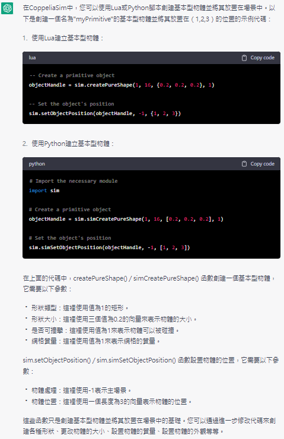
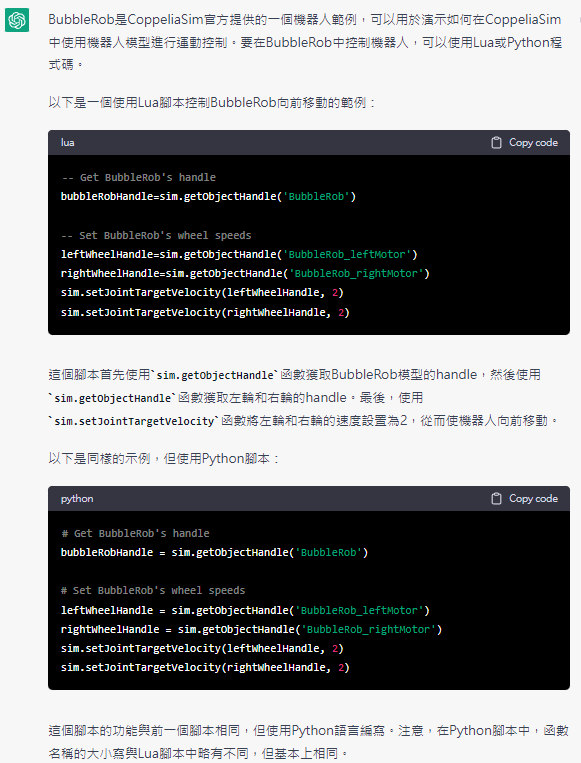

w6 <<
Previous Next >> project1
question
1.在 CoppeliaSim 中, scene 與 model 有何不同?
在CoppeliaSim中，場景和模型這兩個術語有一些不同之處，具體如下：
-
場景：場景：coppeliasim中中的場景場景仿真。。包括的的物體，，，機器人機器人感測器感測器和其他其他其他其他仿真使用。
-
模型：型號：型號coppeliasim中中創建單物體或模型模型模型是是由由種種物理組成元素組成組成元素組成包括包括包括包括形狀形狀，連接器連接器連接器關節，關節關節關節和物理並且可以與其他模型進行交互。
簡單而言之，Scene是包含多個Model的環境，而Model只是Scene中的單個元素。您可以通過將模型添加到場景中來創建Scene，Scene也可以通過從場景從戤椐中切
2.在 CoppeliaSim scene 中, 何謂 clean model?
在CoppeliaSim中，Clean Model是指一個不帶有任何物理屬性的模型。這意味著它沒有質量、碰撞體積、關節等物理特性。Clean Model 可以用於很多目的，例如當您需要將它作為場景中的一個參考模型或用於可視化，而不需要進行物理仿真時，就可以使用 Clean Model。這樣可以減少仿真計算所需的時間和計算資源，從而提高仿真運行的效率。
在 CoppeliaSim 中，您可以通過從模型的屬性對話框中將其設置為 Clean Model，或者使用特殊的指令將其轉換為 Clean Model。轉換為 Clean Model 後，您仍然可以對其進行縮放、平移、旋轉等操作，並且它仍然可以作為其他模型的父模型或子模型使用。
3.如何在 CoppeliaSim scene 中, 如何利用 Lua 以及 Python 建立 primitive type object, 並利用程式設定物件位置?

4.CoppeliaSim .ttt 檔案格式與 .simscene.xml 檔案格式有何不同?
CoppeliaSim中，.ttt檔案格式與.simscene.xml檔案格式都是CoppeliaSim場景文件，但它們的格式有所不同。
.ttt檔案格式是CoppeliaSim最初的場景文件格式，其為二進位格式。這種格式將所有內容都保存在一個二進位文件中，包括場景中的模型、物體、燈光、關節等等。這種格式的優點是可以快速加載場景，因為所有內容都在一個文件中。缺點是不容易進行版本控制，因為這種格式的文件不易於與版本控制系統一起使用。
.simscene.xml檔案格式是一種XML格式的文本文件，它是CoppeliaSim v4.0及其後版本的場景文件格式。這種格式將場景中的所有內容保存在一個文本文件中，可以通過任何文本編輯器進行編輯和版本控制。這種格式的優點是易於進行版本控制和共享，但是文件大小可能比二進位格式的文件大，且加載時間可能會長一些。
總體而言，.simscene.xml檔案格式是更現代、更靈活的場景文件格式，建議使用這種格式來創建和共享CoppeliaSim場景。
5.在BubbleRob中使用何種程式碼?

w6 <<
Previous Next >> project1